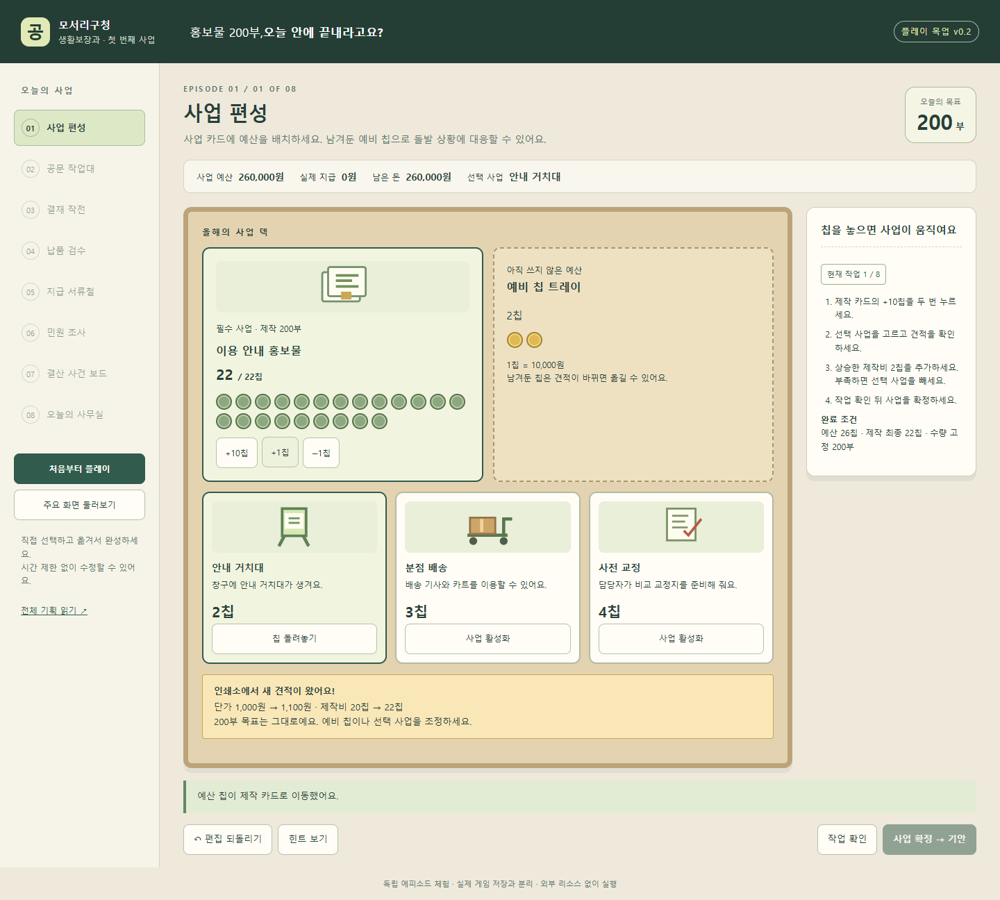
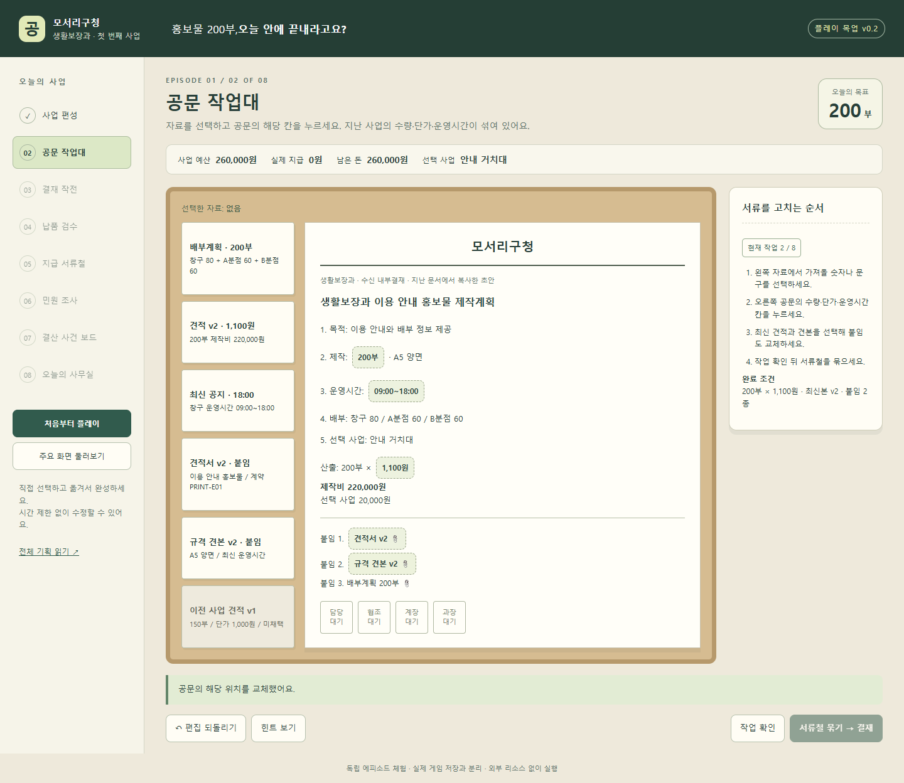
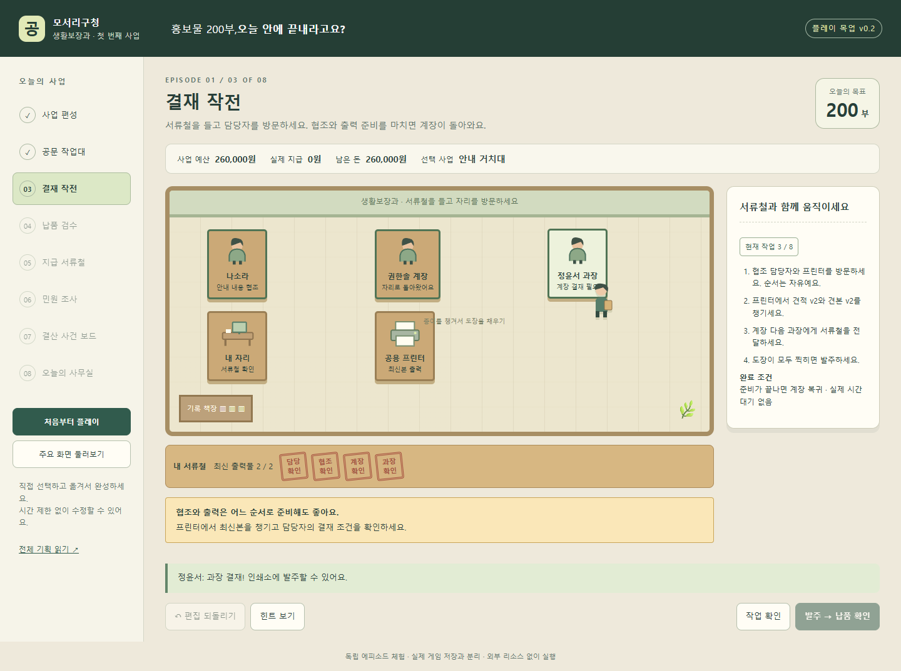
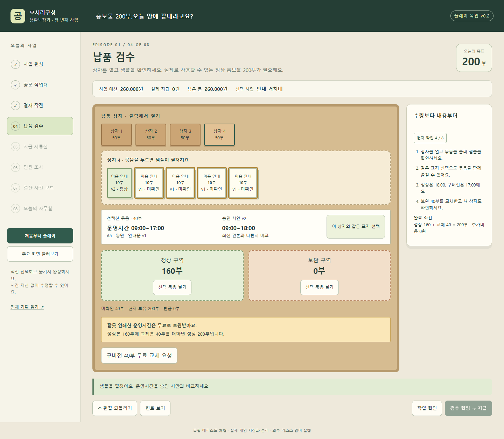
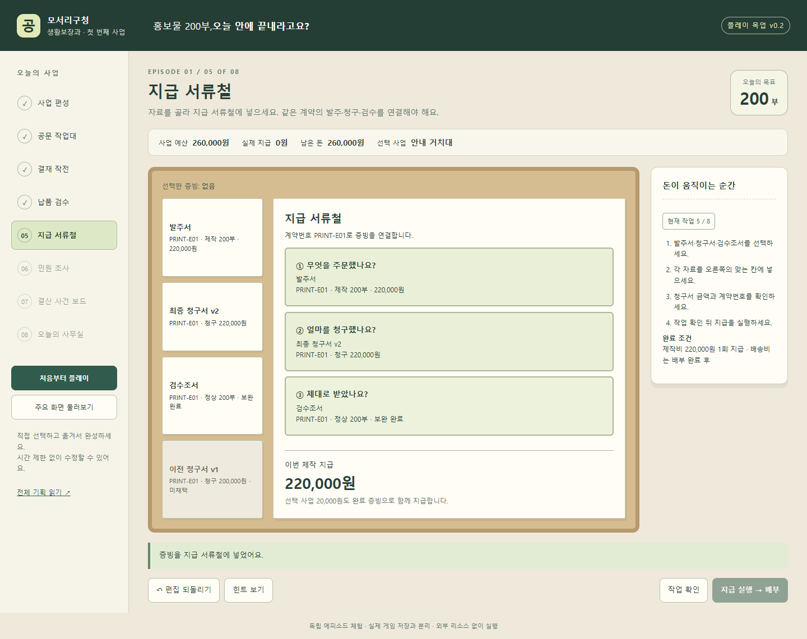
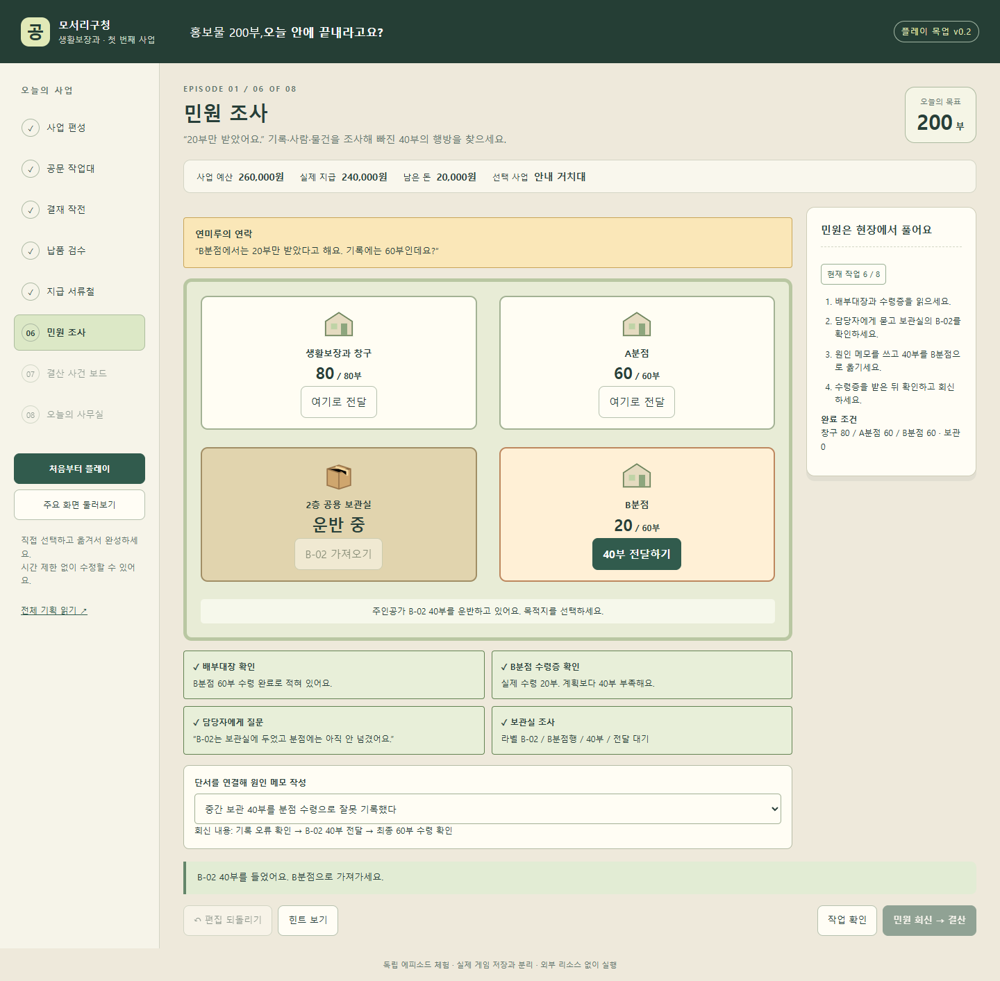
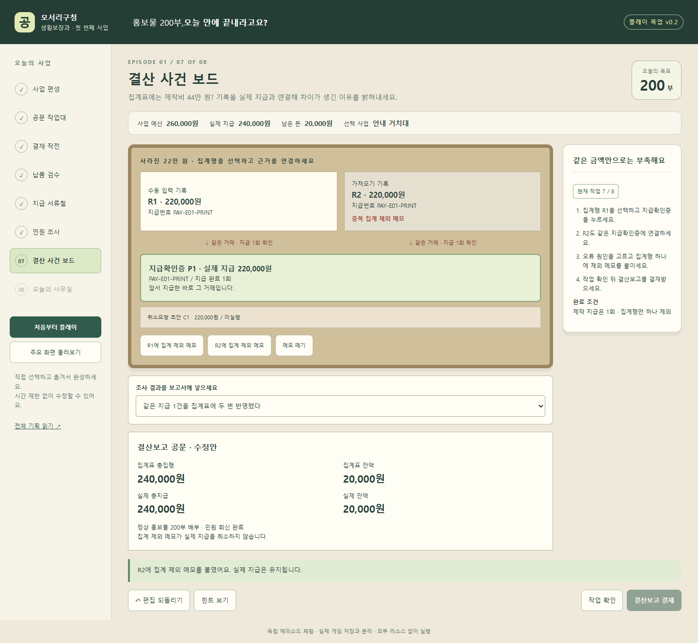
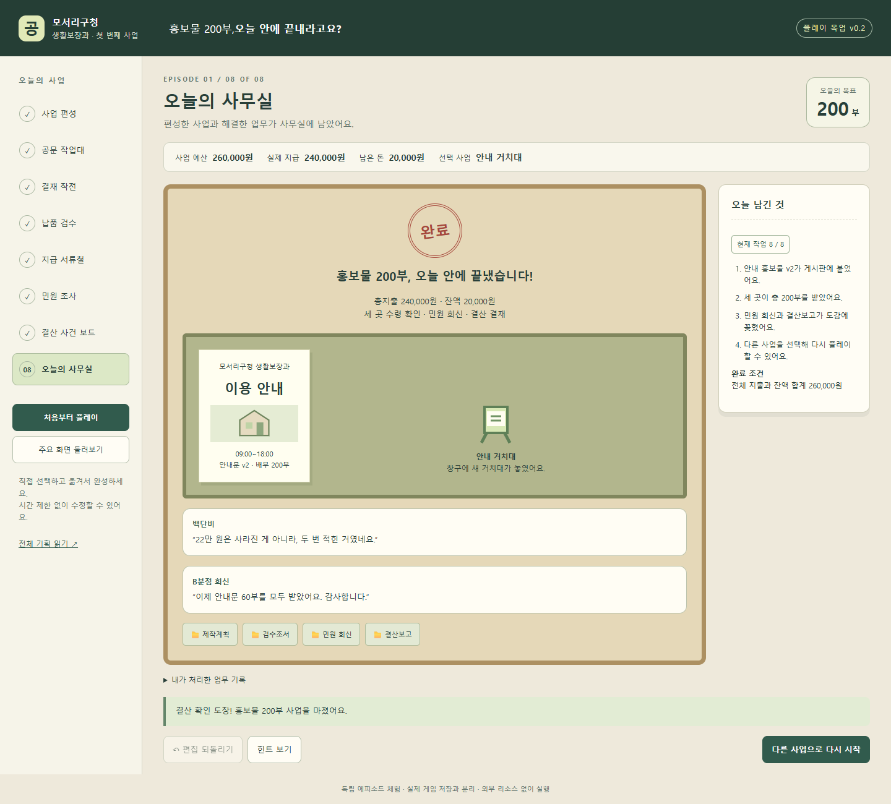

01
사업 편성


예산 칩으로 사업을 활성화하고 가격 상승에 대응
모바일 화면 보기 ↗돈을 배치하고, 서류를 고치고, 물품을 옮겨 사업 하나를 끝내는 독립 에피소드. 주요 화면을 직접 체험하고 장면별 조작과 완료 조건을 확인할 수 있습니다.
다음 개정은 지원 카드에 따른 해결 방법, 문서 모순의 발견, 사무실에서 선택한 순서의 결과에 집중합니다. 반복 검수와 확인 클릭을 줄이고, 기안·결재·납품의3~5분 구간부터 실제 사용자 반응을 확인합니다.
아래 목업은 업무 흐름과 기능을 확인한 v0.2입니다. 재미 중심 v0.3의 새 기능과 사용자 재미 검증은 아직 진행 전입니다.
재미 중심 개정안 읽기 →처음부터 순서대로 진행하거나 ‘주요 화면 둘러보기’로 장면을 선택하세요. 독립 목업은 기존 게임 저장과 연결되지 않습니다.
독립 목업에서 실제 조작한 장면입니다. 이미지를 누르면 원본 크기로 열립니다.

예산 칩으로 사업을 활성화하고 가격 상승에 대응
모바일 화면 보기 ↗
자료를 선택해 공문 위 수량·단가·붙임 교체
모바일 화면 보기 ↗
서류철을 들고 협조와 출력, 결재 순서 수행
모바일 화면 보기 ↗
상자 개봉과 샘플 비교, 구버전 40부 무료 교체
모바일 화면 보기 ↗
계약·청구·검수 증빙을 넣고 실제 지급
모바일 화면 보기 ↗
단서에서 B-02를 찾아 40부 실제 전달
모바일 화면 보기 ↗
집계행을 지급확인증과 연결하고 중복 집계 제외
모바일 화면 보기 ↗
홍보물과 선택 사업의 흔적이 사무실에 남음
모바일 화면 보기 ↗기획 우선순위 v0.3 · 2026년 10월 11일
가장 중요한 목표는 사용자가 업무를 처리하는 동안 재미를 느끼는 것이다. 규칙이 정확하고 화면이 예뻐도, 플레이어가 다음 행동을 궁금해하지 않으면 성공한 에피소드가 아니다. 재미를 검증하기 전에는 업무 종류와 화면 수를 늘리지 않는다.
현재 독립 목업 v0.2는 업무의 연결과 조작·판정을 확인하는 기준이다. 아래 v0.3은 다음 플레이 개정의 우선 규칙이며 아직 목업에 구현된 기능이나 검증된 재미로 표시하지 않는다. 실제 게임의 기존 퍼즐 로직을 재활용하지 않는 조건은 계속 유지한다.
현재는 수첩의 순서를 따라 자료를 올바른 칸에 넣는 행동이 많다. 카드와 도장으로 표현했지만, 자료 이름에 정답이 드러나고 모든 단서를 읽어야 다음 행동이 열리는 구조라 발견하는 즐거움이 작다. 일부 사업 선택은 비용과 마지막 소품을 바꾸지만 플레이 방법의 차이는 약하다.
| 현재 행동 | 재미가 약한 이유 | 개정 방향 |
|---|---|---|
| 제작 칩20개를 맞추기 | 정해진 수를 재현하면 끝남 | 필수 제작은 한 번 배치하고, 남은 지원 예산을 선택하는 데 집중 |
| 최신본 이름을 보고 필드5개 바꾸기 | 해법이 이름과 수첩에 모두 공개됨 | 겉보기에는 정상인 지난 문서에서 중요한 모순2~3개를 발견 |
| 방문 → 버튼 → 도장 | 경로 선택의 결과가 거의 같음 | 공개된 NPC 일정과 서류철 용량을 보고 처리 순서 선택 |
| 같은 상자 묶음 반복 분류 | 동일 행동이 이미 아는 답을 반복함 | 같은 인쇄 묶음은 묶어서 검수하고, 이상 상자에서만 관찰 강화 |
| 단서4개를 모두 클릭 | 조사 순서가 자유여도 결국 전부 읽어야 함 | 주장을 입증하는 조합을 충족하면 다음 행동 허용 |
| 각 단계마다 확인 → 확정 | 판정용 클릭이 업무 사이의 흐름을 끊음 | 돌이킬 수 있는 조작은 바로 반영하고, 지급·인계·최종 결재만 확인 |
### 1 내 선택 때문에 해결 방법이 달라진다
예산편성은 30~60초의 준비 장면으로 만든다. 기본 제작20칩은 한 번에 배치하고, 남은6칩으로 지원 카드와 예비비를 선택한다. 인쇄비 상승 뒤 최종 제작22칩, 전체26칩 조건은 유지한다. 옵션 비용과 최종 잔액도 유지한다.
선택 카드는 주 플레이에서 쓸 수 있는 도움을 제공한다. 도움은 실패를 막는 필수 정답이 아니라, 플레이어가 선호하는 해결 방법이다.
| 지원 | 선택한 플레이 방식 | 선택하지 않았을 때 |
|---|---|---|
| 거치대2칩 | 목적지별 정리대에서 배부 묶음을 쉽게 분리·라벨링 | 책상 위에서 직접 묶음을 나누고 라벨 확인 |
| 배송3칩 | 배송원에게 운반을 맡기고 그 행동 동안 다른 자료 조사 | 주인공이 물품을 들고 이동하며 목적지 확인 |
| 교정4칩 | 교정 담당자가 수상한 문구의 위치를 짚음. 원인은 플레이어가 확인 | 공지와 문서·견본을 직접 비교해 모순 발견 |
배송 선택은 동시에 진행할 수 있는 행동을, 교정 선택은 관찰의 도움을, 거치대 선택은 물품 정리의 손맛을 준다. 회차의 처리 방식이 실제로 달라져야 하며, 단순한 필수 클릭 감소만으로 옵션을 평가하지 않는다.
### 2 예상과 다른 상황을 내 순서로 수습한다
가장 먼저 검증할 구간은 ‘기안 → 결재 → 납품’의 3~5분 체험이다. 문서의 핵심 모순을 찾고, 서류철을 들고 협조·출력·결재를 처리하며, 마지막에 이상한 납품 상자를 발견한다.
결재 사무실은 행동 단위로 진행한다. 첫 체험의 예시 일정은 다음과 같다.
순서를 잘 고르면 일이 한 번에 맞물리는 만족감을 준다. 잘못 고르면 정상 작업을 유지한 채 한 번 더 움직인다. 기한은 압박을 주는 연출로만 사용한다. 실제 시간 초과, 점수 때문에 서류 내용을 읽지 못하는 상황, 무작위로 계속 자리를 비우는 상황은 사용하지 않는다.
프린터 소동은 혼동할 근거가 있는 종이로 만든다. 이름에 ‘구버전/정답’을 먼저 써 두지 않고 사업명·계약번호·단가·출력일을 살펴보게 한다. 필요한 두 장을 발견하면 계속 다른 출력물을 고를 필요가 없다. 잘못 챙긴 종이는 나중에 협조 담당자가 짧은 메모로 돌려주며, 서류 한 장만 바꾸면 이어서 진행한다.
첫 납품의 세 정상 상자는 동일 인쇄 묶음의 샘플과 수량표를 확인하면 함께 승인할 수 있다. 네 번째 상자에서 운영시간이 다르다는 사실을 발견하도록 한다. 정상160·구버전40 → 무료 교체40 → 정상200의 수량 규칙은 유지한다.
### 3 내가 발견한 것으로 문제가 풀린다
민원은 ‘단서 전부 수집’보다 가설 확인으로 진행한다. B분점 계획60과 수령증20을 비교해 부족40을 알아내고, B-02의 라벨과 인계 정보를 통해 현재 위치를 확인하면 운반을 시작할 수 있다.
최소 입증 조건은 부족량 근거와 물품 행방 근거다. 물품 라벨이40부·B분점행·전달대기를 확인하고 인계 기록이 해당 보관실을 가리키면, 담당자 진술을 듣지 않아도 해결할 수 있다. 또는 담당자 진술로 보관 위치를 알아낸 뒤 현장 라벨을 확인할 수 있다. 질문과 문서 조사의 순서가 플레이어의 방법이 된다.
조사 전에도 보관실을 볼 수 있다. 단서가 부족하면 찾은 상자의 의미를 확정할 수 없지만, NPC와의 짧은 대화가 다음 확인 대상을 알려준다. 물품을 찾기 전에 수첩이 ‘정답 원인’을 설명하지 않는다.
40부를 옮겼을 때 지도와 수령증, 민원인의 반응이 함께 바뀐다. 짧은 대사 예시는 다음과 같다.
NPC의 말은 플레이어가 한 행동에 반응한다. 긴 설명을 읽어야 진행되는 대화로 만들지 않는다. 첫 체험에서는 사건 해결에 필요한 대사 한 줄을 중심으로 하고, 추가 이야기는 선택해서 읽는다.
완성판의 첫 체험 목표를10~15분으로 줄인다. v0.2의17~24분은 업무 흐름 검토를 위한 이전 추정이며, 실제 재미를 측정한 결과가 아니다. 8개 화면은 설명용 목차로 유지하되 실제 플레이는 준비·현장수습·사건마무리의 세 흐름으로 연결한다.
| 흐름 | 분량 목표 | 주된 재미 | 간소화하는 업무 |
|---|---|---|---|
| 사업 준비 | 1~2분 | 지원 선택, 가격 상승에 대응 | 필수 예산 배치와 목적·제목 자동 제공 |
| 기안과 현장수습 | 5~7분 | 문서 모순 발견, 결재 동선, 이상 납품 발견 | 정상 묶음 반복 검수, 지급 증빙 중복 입력 |
| 민원과 결산 마무리 | 4~6분 | 행방 추적, 실제 전달, 같은 지급의 중복 기록 발견 | 회신과 보고의 반복 문구 입력 |
공문은 게임의 중심 작업물로 계속 사용한다. 공문의 모든 필드를 퍼즐로 만들 필요는 없다. 지출은 검수·계약의 의미를 확인한 뒤 한 번 실행하고, 결산은 다른 대형 미니게임을 추가하기보다 앞서 지급한 기록을 다시 알아보는 짧은 추리로 마무리한다.
수첩에는 현재 목표와 공개 규칙을 보여주고, 처음부터 해결 순서를 모두 공개하지 않는다. 첫 조작에는 한 번의 위치 안내를 제공한다. 이후 힌트는 ‘관련 자료의 위치 → 확인할 관계 → 구체적 해법’의 순서로 플레이어가 요청할 때만 보여준다.
첫 회차 사건과 위치는 고정한다. 재미가 확인된 뒤 재플레이에서는 출력 순서, 이상 묶음의 상자 위치, NPC 대사와 가능한 조사 시작점을 바꿀 수 있다. 수량·실제 지급·필수 증거의 관계는 바꾸지 않고, 저장한 회차에서 사건을 다시 추첨하지 않는다. 랜덤 추가는 첫 재미 검증의 선행 작업이 아니다.
실패는 재시도할 이유가 되어야 한다. 잘못된 문서·누락 붙임은 반려 메모로 돌아오며 수정 지점을 짚는다. 물품이나 지급을 잃고 처음부터 반복하는 실패는 만들지 않는다. 더 빠른 처리와 다른 방법을 시험해 보는 선택적 도전은 완주 이후에 제공한다.
다음 개발은8개 화면의 완성도 향상보다3~5분 핵심 체험의 재미 검증을 먼저 한다. 주변 업무를 완성하기 전에 처음 보는 사용자5명에게 설명 없이 체험하게 한다. 성공 기준은 초기 가설이며, 기준을 통과해도 전체 이용자의 재미를 입증한 것으로 일반화하지 않는다.
| 질문 또는 관찰 | 초기 목표 | 실패했을 때 고칠 것 |
|---|---|---|
| 첫 의미 있는 행동까지 걸린 시간 | 5명 중4명이30초 안에 시작 | 자료 밀도와 첫 안내 |
| 진행 중 다음 행동을 시도하거나 가설을 말하는가 | 5명 중3명 이상이 자발적 탐색·수정 | 선택 결과와 사건의 발견 구조 |
| 재미를 느낀 순간을 구체적으로 말하는가 | 5명 중3명 이상이 자기 행동과 결과를 연결해 말함 | 핵심 조작과 즉시 반응 |
| 끝난 뒤 다른 방법이나 지원으로 한 번 더 해보고 싶은가 | 5명 중3명 이상이 자발적으로 재시도 선택 | 지원 카드의 차이와 대안 경로 |
| 업무 숙제처럼 느껴진 구간은 어디인가 | 같은 구간을2명 이상 지목하면 우선 수정 | 반복 입력·긴 설명·불필요한 확인 |
완료율만으로 재미를 판정하지 않는다. 흥미가 없는데 안내를 따라 끝낸 것인지 구분한다. 관찰 뒤 ‘가장 좋았던 순간’, ‘가장 지루했던 순간’, ‘다시 한다면 바꿀 선택’을 묻는다. 정답률·오류 횟수는 막힌 지점을 찾는 보조 자료로 사용한다.
테스트에서 재미가 약하면 더 많은 업무나 보상을 덧붙이기 전에 지루한 필수 행동을 줄이고, 플레이어의 선택이 드러나는 한 장면을 바꾼다. 실제 체험 전에는 ‘재미 검증 완료’로 표시하지 않는다.
1. 지원 카드 최소2종이 현장 행동을 서로 다르게 만든다.
2. 문서에서 눈에 보이는 중요한 모순을 스스로 발견하고 고칠 수 있다.
3. 협조와 출력의 순서를 선택하고 그 결과를 사무실에서 확인할 수 있다.
4. 같은 정상 물품을 여러 번 승인하는 반복을 줄인다.
5. 민원에서 모든 단서를 클릭하지 않고도 근거 조합으로 해결할 수 있다.
6. 힌트를 열지 않은 기본 화면에 사건 해법을 미리 적지 않는다.
7. 원래의 예산·검수·지급·수량 보존 판정이 계속 성립한다.
8. 실제 사용자 반응을 기록해 다음 수정의 근거로 남긴다.
첫 시범 에피소드 개정기획 v0.2 · 2026년 10월 11일
기획 우선순위: 재미 중심 개정안 v0.3을 다음 플레이 개정의 기준으로 사용한다. 아래는 현재 v0.2 목업의 업무 흐름과 판정 계약이다. v0.3은 의미 있는 선택, 발견, NPC 반응을 우선하고 목표 플레이 시간을10~15분으로 조정한다. 현재 목업의 기능 확인과 실제 사용자의 재미 검증은 구분한다.
플레이어가 예산 칩으로 사업을 작동시키고, 직접 고친 공문을 들고 사무실을 돌며, 홍보물을 검수·전달하고 기록 오류를 조사한다. 종이와 상자와 사람의 상태가 계속 이어지며, 사업을 끝낸 결과가 게시판과 문서 도감에 남는다. 이번 에피소드의 목표는 생활보장과 이용 안내 홍보물 200부를 제작해 창구와 두 분점에 정확히 배부하는 것이다.
기존 게임의 퍼즐 판정기·문제 생성기·단계 엔진·포인트·저장 로직은 사용하지 않는다. 신규 에피소드 상태, 행동, 판정, 거래 기록을 별도 구성한다. 인물 이름과 부서 설정은 세계관으로만 이어 쓴다. 금액과 절차는 게임에서 공개하는 가상 업무 규칙이다.
업무 메뉴를 오가는 느낌을 줄이고 한 사업의 물건을 계속 다룬다. 공문 작업대의 승인 시안은 검수 샘플의 기준이 되고, 검수조서는 지급 증빙이 되며, 실제 지급확인증은 결산의 증거가 된다. 같은 홍보물 200부가 시안, 상자 속 묶음, 목적지별 재고, 게시판의 안내문으로 표현된다.
| 참고작 | 채택하는 장점 | 이번 에피소드에서의 조작 |
|---|---|---|
| Papers, Please | 작업대에서 서류를 비교하고 수정하는 손맛 | 자료 선택 → 공문 위 필드 교체 → 붙임 묶기 → 도장 |
| Stacklands | 카드 조합이 실제 생산과 역할로 연결됨 | 사업 카드에 칩 배치 → 담당자·카트·거치대 활성화 |
| Sticky Business | 만들고 분류하고 포장하는 차분한 작업 | 상자 개봉 → 샘플 펼치기 → 묶음 분류 → 목적지 라벨 |
| Overcooked! 2 | 물건을 들고 작업대 사이를 이동하는 흐름 | 서류철 소지 → 협조·프린터·계장·과장 방문 |
| Duck Detective | 일상 공간과 대화가 조사 장소로 바뀜 | NPC 진술·기록·보관 상자를 조사해 부족 물품 전달 |
| The Case of the Golden Idol | 증거에서 관계를 찾아 사건을 설명함 | 집계행 → 지급확인증 연결 → 원인 작성 → 집계 정정 |
화풍은 녹색·크림색·목재색의 작은 사무실과 종이 중심으로 통일한다. 참고작의 그림과 UI를 복제하지 않는다. 실시간 제한이나 빠른 클릭은 필수 판정에 사용하지 않는다. “오늘 안에”는 이야기 속 긴장감이며 느리게 확인해도 완주할 수 있다.
| 장면 | 화면 | 첫 행동 | 눈에 보이는 변화 | 완료 조건 |
|---|---|---|---|---|
| 1 | 사업 덱과 예비 칩 트레이 | 제작 카드에 +10칩 두 번 | 제작 카드 활성화, 선택 사업 소품 등장 | 최신 제작비 22칩 + 선택 사업 + 예비 = 26칩 |
| 2 | 공문과 참고자료가 펼쳐진 책상 | 배부계획의 200부 선택 → 공문 수량 칸 | 구문구 교체, 클립과 담당 도장 | 최신 수량·단가·운영시간·붙임 일치 |
| 3 | 서류철을 든 주인공과 사무실 | 협조 담당자 또는 프린터 방문 | 동선과 서류철 출력물·도장 변화 | 협조·출력 → 계장 → 과장 |
| 4 | 네 상자와 정상·보완 구역 | 상자 1 개봉 → 묶음 샘플 확인 | 종이 묶음 이동, 구버전 반품, 교체 상자 | 정상 200부, 불량 40부 반품·무료 교체 |
| 5 | 증빙 트레이와 지급 서류철 | 발주서 선택 → 발주 칸 | 증빙 클립, 실제 지급확인증 | 계약·청구·검수 일치, 제작비 1회 지급 |
| 6 | 배부 지도와 민원 사건철 | B분점 수령증 조사 | 단서 획득, 보관 물품 운반, 최종 수령증 | 창구80/A60/B60, 운반·보관0, 회신 |
| 7 | 집계행과 지급 자료가 있는 보드 | R1 선택 → 지급확인증 연결 | 근거 선, 제외 메모, 보고 금액 변화 | 동일 지급 1회 입증, 중복 집계 1행 제외 |
| 8 | 게시판과 문서 도감 | 완료 기록 확인 | 홍보물과 선택 소품, NPC 후속 대사 | 민원·전체 지급·결산 완료 |
완성판의 예상 플레이 시간은 17~24분이다. 목업은 짧게 흐름을 확인하도록 이동·연출을 압축한다. 상단에는 사업 예산과 실제 지급·남은 돈을 표시하고, 작업 옆 수첩에는 첫 행동과 완료 조건을 적는다. 수첩을 읽고 폼을 채우는 화면이 되지 않도록 중앙의 종이·카드·물건이 주된 조작 대상이다.
기본 조작은 대상 선택 → 놓을 위치 선택이다. 드래그는 완성판의 선택 기능으로 추가하고, 목업과 모바일은 탭만으로 모든 작업을 끝낼 수 있다. 필요한 곳에 묶음 선택을 제공한다. 20개의 묶음을 하나씩 반복 확인하도록 강제하지 않는다.
작업 확인은 초안을 검사한다. 유효하면 사업 확정·서류철 묶기·발주·검수 확정·지급 실행·민원 회신·결산 결재 버튼이 활성화된다. 확인 뒤 편집하면 평가를 해제한다. 지급과 인계는 실행 시 한 번만 기록한다. 이미 완료한 장면을 다시 볼 때는 읽기만 가능하다.
오류는 문제 위치와 수정 방법을 함께 알려준다. 구버전 청구서를 넣으면 최신본으로 바꾸는 칸만 남고, 과장을 먼저 찾아가면 계장 확인을 요청받는다. 이미 정상인 항목은 유지한다. 힌트는 가장 먼저 해결할 조건을 짚는다.
문서를 고치면 종이가 끼워지고, 붙임을 넣으면 클립이 생기며, 결재를 받으면 도장 칸이 채워진다. 검수 묶음은 두 구역 사이로 이동한다. 완성판에는 짧은 종이·클립·도장 효과음과 이동 연출을 추가한다. 무음과 동작 줄이기에서도 상태를 글자로 확인할 수 있다.
화면 중앙은 제작 카드, 옆은 예비 칩 트레이, 아래는 선택 사업 세 장이다. 카드에는 비용뿐 아니라 이후 등장할 물건과 사람을 그림으로 보여준다. 제작 카드의 +10칩을 두 번 누르면 200부 제작 계획이 활성화된다.
| 사업 | 비용 | 이후 효과 | 선택하지 않아도 가능한 행동 |
|---|---|---|---|
| 홍보물 제작 | 처음20칩 → 최종22칩 | 인쇄소 발주와 납품 상자 | 필수 사업 |
| 안내 거치대 | 2칩 | 완료 화면에 거치대 설치, 배부 위치 표시 | 기존 배부대 사용 |
| 분점 배송 | 3칩 | 배송 기사·카트·운송장, 1층 배송 보관실 | 주인공·동료 운반, 2층 공용 보관실 |
| 사전 교정 | 4칩 | 나소라의 비교 교정지, 공문·검수에서 재열람 | 최신 공지와 견본 직접 비교 |
선택 사업을 켜면 필요한 칩이 예비 트레이에서 이동하고, 끄면 돌아온다. 일부 배정 상태를 별도 퍼즐로 만들지 않는다. 제작 수량은 200부로 고정한다.
유효한 첫 계획에서 ‘인쇄소 견적 확인’을 누르면 단가 1,000원 → 1,100원 사건이 한 번 발생한다. 제작 카드에 2칩을 추가한다. 예비가 부족하면 선택 사업을 해제한다. 사건 이후 최종 유효 경로는 기본만·거치대·배송·교정 네 가지다.
| 최종 선택 | 총지출 | 최종 잔액 |
|---|---|---|
| 기본만 | 220,000원 | 40,000원 |
| 거치대 | 240,000원 | 20,000원 |
| 배송 | 250,000원 | 10,000원 |
| 교정 | 260,000원 | 0원 |
많이 쓰거나 많이 남긴 결과를 성공 순위로 환산하지 않는다. 지출 계획은 아직 실제 지급이 아니다. 첫 계획 제작20+거치대2+배송3+예비1은 사건 뒤 하나를 조정해야 하며, 제작22+거치대2+배송3은 27칩이므로 거절한다.
지난 사업 기안문은 수량150부, 단가1,000원, 운영시간17:00, 견적v1과 견본v1을 포함한다. 왼쪽 자료의 숫자나 문구를 선택해 오른쪽 공문의 해당 칸을 누르면 교체한다. 칸에 맞지 않는 자료는 넣을 수 없다.
배부계획200부 → 수량, 견적v2의1,100원 → 단가, 최신 공지18:00 → 운영시간, 최신 견적서와 견본 → 붙임으로 연결한다. 금액 미리보기는 수량×단가로 갱신되지만 정상 판단에는 최신 자료의 일치도 필요하다. 제목·목적·A5양면·배부80/60/60은 목업에서 올바른 값으로 제공한다.
제작200부×1,100원=220,000원, 안내문v2·18:00, 최신 붙임2종이 일치해야 담당 확인을 받는다. 선택 사업은 확정한 카드에서 문서에 반영된다. 완료하면 담당 도장이 찍힌 서류철을 들고 사무실로 간다.
신규로 그린 사무실에 내 자리·나소라·프린터·권한솔 계장·정윤서 과장이 있다. 자리를 누르면 서류철을 소지한 주인공이 방문하고 해당 업무를 처리한다. 기존 게임의 사무실 이동 엔진이나 가구 좌표를 사용하지 않는다.
나소라는 최신 안내 내용과 배부계획을 확인하고 협조 도장을 찍는다. 프린터에는 최신 견적v2·구견적v1·견본v2·다른 사업 견적이 함께 있다. 최신 견적과 견본을 챙기면 서류철의 출력물 수가2/2가 된다. 가격이 같아도 다른 사업 견적은 거절한다. 모든 출력물은 계속 남아 있어 놓친 자료를 다시 고를 수 있다.
협조와 출력을 마치면 회의 중이던 계장이 돌아온다. 실제 시간이나 이동 횟수를 기다릴 필요가 없다. 계장 도장 이후 과장 도장을 받고 발주한다. 협조와 출력의 방문 순서는 자유다. 뒤 단계에서 계획 수정이 필요하면 완성판에는 새 문서 버전과 재결재를 제공한다. 첫 목업에서는 확정된 공문을 읽기만 허용한다.
네 상자에 각50부가 도착한다. 10부 묶음20개이며, 상자1~3은 최신본150부, 상자4는 최신본10부와 구버전40부다. 상자를 누르면 묶음이 펼쳐지고, 묶음을 누르면 샘플의 운영시간과 승인 시안이 나란히 보인다.
확인한 묶음을 정상 또는 보완 구역에 넣는다. 같은 상자·같은 표지를 한 번에 선택할 수 있다. 18:00인v2를 정상, 17:00인v1을 보완으로 분류해야 한다. 잘못된 분류는 해당 묶음을 유지한 채 차이를 알려준다.
정상160·보완40이 확인되면 무료 교체를 요청한다. 구버전40부를 반품하고 새 상자에 교체본40부가 도착한다. 교체본도 확인해 정상 구역에 넣어야 한다. 총 도착240−반품40=보유200이며, 정상160+교체40=정상200이다. 추가 지급은0원이다. 반품된 묶음은 검수 작업에서 제거되지만 기록은 남는다.
사전 교정의 비교지는 오류 확인을 돕는다. 납품 오류는 선택 사업과 무관하게 발생한다. 완성판에는 교정 지원이 앞선 검토 시간을 줄이는 효과와 담당자 대사를 강화하되 검수 원칙은 동일하게 둔다.
발주서·청구서v2·검수조서·구청구서v1이 트레이에 있다. 자료 선택 → 발주·청구·검수 칸 순서로 넣는다. 세 자료의 계약번호PRINT-E01이 같고, 최종 청구220,000원과 정상 검수200부가 일치해야 지급된다.
제작비는PAY-E01-PRINT에220,000원 한 번만 기록한다. 거치대·교정은 서비스 완료 증빙으로 함께 지급한다. 목업에서는 검수 확정 시 해당 서비스 증빙도 완료한 것으로 제공하며, 완성판에는 설치 또는 교정지 인수의 짧은 확인 조작을 추가한다. 배송30,000원은 민원 단계에서 실제 배부가 끝난 뒤 지급한다.
최종 사업 잔액, 실제 잔액, 미지급 예정액을 구분한다. 예산을 배치하거나 공문에 금액을 넣는 행동은 실제 돈을 차감하지 않는다. 지급 버튼의 재입력·새로고침으로 거래가 늘어나지 않는다.
정상200부를 초기 배부한 결과는 창구80/A60/B20/중간보관40이다. 대장에는 B60 수령완료로 적혀 있다. 중간 장소의 인수를 분점 수령으로 잘못 기록한 사건이다. 검수 오류40부는 이미 교체됐으며 이번40부는 정상본이다.
| 조사 대상 | 단서 | 플레이 행동 |
|---|---|---|
| 배부대장 | B60 완료 | 기록 조사 |
| B분점 수령증 | 실제20 | 부족40 확인 |
| 담당자 | 보관실에 두고 분점에 넘기지 않음 | 질문과 진술 기록 |
| 보관실 | B-02/B분점행/40부/전달대기 | 물품 라벨 조사 |
단서4개를 확보하고 ‘중간 보관을 최종 수령으로 잘못 기록’ 원인을 선택하면 B-02를 가져올 수 있다. 주인공 또는 배송 기사가40부를 운반한다. 운반 중에는 보관0·운반40이며 전체수량은200이다. 다른 기관을 선택하면 라벨의 목적지를 알려주고 운반을 유지한다.
B분점에40부 전달 → 최종수령증60부 → 작업확인 → 원인·조치·결과 회신 순으로 종결한다. 수령증 없이 대장의 숫자만 고칠 수 없다. 배송 경로에서는 회신과 동시에 배송완료 증빙을 확인하고 미지급 배송비30,000원을 한 번 지급한 뒤 결산으로 간다. 완성판에는 회신 공문의 조각 조립과 지급 확인을 별도 짧은 행동으로 표현한다.
제작 집계행R1은 수동 입력, R2는 가져오기 기록이며 둘 다PAY-E01-PRINT의220,000원을 참조한다. 실제 지급확인증P1은 지급완료1회다. 같은금액220,000원의 취소요청초안C1도 있으나 미실행이다. 이 취소 초안은 환불이나 실제 지급 증거가 아니다.
R1 선택 → P1 연결, R2 선택 → P1 연결로 같은 거래를 입증한다. ‘중복 집계’ 원인을 고르고 R1 또는R2 중 하나에 제외 메모를 붙인다. 어느 행을 남겨도 제작비를 한 번 반영하면 유효하다. 제외 메모는 원기록을 지우거나 실제 지급을 취소하지 않는다.
집계 수정안의 총지출·잔액은 즉시 갱신되고 실제 지급 수치는 별도로 보인다. 잘못된 원인이나 취소 초안 연결은 작업 확인에서 거절한다. 선택 사업의 정상 지급은 제외 대상이 아니다. 민원 종결과 전체 지급, 원인·근거·수정안이 일치하면 결산보고에 도장을 받고 완료한다.
게시판에 최신 안내문과200부배부 기록이 붙는다. 거치대 선택은 거치대, 배송 선택은 배송확인 기록, 교정 선택은 교정 견본이 남는다. 선택하지 않은 소품은 표시하지 않는다. 제작계획·검수조서·민원회신·결산보고가 문서 도감에 꽂힌다.
백단비: “22만 원은 사라진 게 아니라 두 번 적힌 거였네요.” B분점: “이제 안내문60부를 모두 받았어요.” 권한솔의 후속 대사는 완성판에 추가한다. 핵심 보상은 결과물과 대사이며 기존 캠페인의XP/P를 연결하지 않는다.
신규 상태는 사업 배정, 문서 필드와 버전, 결재, 출력물, 묶음 품질, 실제 지급, 배부 위치, 단서, 원인, 집계 연결과 제외, 결과를 포함한다. 액션을 적용할 때 현재 단계와 조건을 검사한다. 수정은 평가를 해제하고, 지급·반품·인계 이후에는 이전 편집을 되돌려 실행 결과를 취소할 수 없다.
검수 묶음의 품질 기록과 배부 장소의 재고는 서로 다른 보기다. 지급 이후 전체 정상200부의 실제 위치는 배부 상태가 기준이며 검수 화면의 품질 합계를 재고에 다시 더하지 않는다.
목업 저장키는gong-e01-independent-mockup-v2이며 기존 게임의 저장을 읽거나 쓰지 않는다. 플레이는 새로고침 후 이어지고, ‘주요 화면 둘러보기’는 대표 거치대 경로의 장면을 별도 메모리에서 준비해 저장하지 않는다. 둘러보기의 장면 선택은 실제 완주 기록이 아니다. ‘처음부터 플레이’는 목업의 회차만 초기화한다.
| 항목 | 이번 목업 | 완성판의 후속 작업 |
|---|---|---|
| 주요 화면 | 8개 화면, 탭 조작과 실제 판정 | 시각 연출·전환·음향 정교화 |
| 사업 경로 | 기본·거치대·배송·교정, 서로 다른 지출과 결과 | 선택 사업 NPC와 공간 연출 강화 |
| 기안 | 수량·단가·운영시간·붙임 교체 | 허용 문구 조립, 버전별 재결재 |
| 사무실 | 신규 사무실 그림, 위치별 방문과 조건 | 이동 경로와 서류철 전달 애니메이션 |
| 검수 | 묶음·샘플·분류·교체·수량 판정 | 상자 개봉과 종이 이동 연출 |
| 지급 | 신규 거래 상태와 실제 지출 | 서비스별 증빙 인수 장면 |
| 민원 | 단서4종·원인·40부운반·수령·회신 | 단서 선 연결, 운반 담당자 선택, 회신 조립 |
| 결산 | 집계행과 증거 연결·원인·제외·보고 | 보고 문구 조립, 인물 대화 |
| 저장 | 브라우저 로컬 저장, 별도 키 | 저장 손상 복구·회차 내보내기 |
목업은 에피소드의 신규 규칙을 확인하는 독립 체험이며 배포 사이트의 실제 게임에는 연결하지 않는다. 기존 게임의 기능을 가져와 외형만 바꾸지 않는다. 이번 목업 코드의 기반도 신규 에피소드 전용 파일이다.
Papers, Please 공식 자료, Stacklands 공식 소개, Sticky Business 공식 자료, Overcooked! 2 공식 소개, Duck Detective 공식 소개, The Case of the Golden Idol 공식 소개.